Request Builder and Refinement Card
You build a clear request for an AI tool. Then you learn quick ways to fix a weak answer.
AAI-E-MC1-S02-CARD01You build your request in 4 parts.
The 4 parts are Role, Context, Task and Format. You fill in one blank for each part.

[ROLE]. For [CONTEXT], [TASK]. Format it as [FORMAT].Filled example
You are a workshop teacher. For new trainees, before the practical, write a short safety reminder. Format it as 3 points for the noticeboard.
The first AI answer is not always right.
You can fix a weak answer with 5 moves. Here are moves 1 to 3.
Your task. Turn the dial to each move and read the new answer.
Write a safety reminder for new trainees.
Safety equipment must be worn at all times. Work areas must be kept clear. Machines must be switched off before cleaning.
Only tell me about safety equipment.
Safety glasses and gloves must be worn for every job in the workshop.
Tell me more about keeping work areas clear.
Safety equipment must be worn at all times. Work areas must be kept clear. Tools must go back on the rack after use. Spills must be cleaned at once. Bags must stay outside the workshop.
Say this simply for new trainees.
Always wear your safety glasses and gloves. Keep your work area clear. Switch off the machine before you clean it.
Moves 4 and 5 help you check and combine answers.
Stop rule. If you can fix it faster yourself, fix it yourself. Always check the answer before you use it.
Your task. Tap each card to see when you use the move.